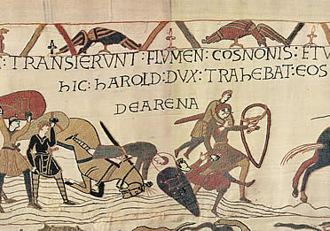

Introduccion a la guerra
Todas las guerras son odiosas para cuantos sufren sus consecuencias, que son siempre negativas en todos los sentidos. Y la Guerra de la Independencia de 1808-1814 lo fue aún en mayor grado.
La guerra afectó por igual a los más de diez millones y medio de españoles que en aquel momento habitaban el país, aunque fue vivida de forma diferente según su condición social: hombres y mujeres, jóvenes y adultos, aristócratas y plebeyos, clérigos y laicos, militares y civiles, hombres de la administración, del comercio y de los distintos oficios, gente común de la calle y cuantos conformaban las élites dirigentes. El conflicto afectó a personas y grupos humanos diferentes, diversos en ideas, caracteres, lenguas y costumbres, y a una minoría partidaria de introducir cambios y reformas en una sociedad que estaba en crisis.
La antigua imagen difundida -especialmente por el cine de la época dorada de Hollywood- entre el gran público respecto a la guerra medieval fue un puñado de tópicos donde se entremezclaban caballeros de brillantes armaduras, duelos en los que el honor constituía un principio básico, eventos y hazañas heroicas que inspiraron los cantares de gesta y a los trovadores que los interpretaban, alimentando la imaginación aún hoy en día de un buen número de personas.
Pero tampoco hay que caer en el tópico opuesto, que se ha ido construyendo en las últimas dos o tres décadas, divulgado por los cómics, algunas exitosas y fantasiosas series de TV y el cine contemporáneo donde las guerras medievales aparecen como las más crueles, sangrientas y bárbaras de la historia del hombre.
La guerra ha sido una constante en el ser humano desde los comienzos de su existencia. Las sanguinarias matanzas perpetradas por los asirios, las conquistas de Alejandro Magno, las del Imperio Romano, las atrocidades de Genghis Khan, el vano intento de hacerse con Europa por parte de Napoleón o los gigantescos desastres de las dos Guerras Mundiales del siglo XX son sólo unos pocos ejemplos de la tendencia irracional del ser humano -a lo largo de TODA LA HISTORIA- por la conquista y el poder a cambio de la sangre de millones de víctimas.
Si algo hay de positivo (o menos negativo) de las guerras de la Antigüedad, la Edad Media y los primeros siglos de la Era Moderna frente a la guerra contemporánea es que el poder de destrucción de la fuerza militar y de su armamento era mucho menor que en nuestros siglos XX y XXI.
Las cruzadas fueron expediciones militares promovidas por la iglesia católica en la Edad Media, entre los siglos XI y XIII, con el objetivo de recuperar la Tierra Santa que estaba en manos de los musulmanes. Según esta definición el motivo principal de las cruzadas era religioso, pero aunque el fervor religioso del momento fuera el detonante principal, también hubo otra serie de motivaciones para llevar a cabo las cruzadas como los intereses de la nobleza, motivos comerciales, control de rutas, y el afán hegemónico de los papas sobre la iglesia de Oriente.
En cuanto a los cruzados que participaban debemos decir que en la Edad Media solo los primogénitos heredaban, por ello muchos segundones combatieron en las cruzadas buscando riquezas y reconocimiento. También los más humildes participaron con el fin de mejorar su bienestar. Mientras los nobles se organizaban en un pomposo ejército para participar en la primera cruzada, un predicador francés Pedro el Ermitaño comenzó su propia cruzada montado en un asno y logró convocar a más de diez mil campesinos.
Las Órdenes Militares también participaron en las cruzadas y dada su hegemonía, reforzaron el potencial militar de los cruzados. Los Templarios, Hospitalarios, la Orden Teutónica y la Orden de Malta colaboraron muy activamente adquiriendo así mucho más prestigio.
Cuando el 27 de noviembre del año 1095 el papa Urbano II predicó su sermón de cruzada, puso en marcha un movimiento que afectaría profundamente a la sociedad occidental durante medio milenio. Las cruzadas formaron parte de la constante guerra entre las potencias cristianas y musulmanas por el control del Mediterráneo, una pugna que había comenzado con el ascenso del Islam en el siglo VII, y que ha continuado hasta el presente. La clave de todo el movimiento cruzado fue el control de Jerusalén. Ciudad santa tanto para cristianos como para musulmanes, en su conquista se sucedieron expediciones y batallas durante dos largos siglos. Pero, en realidad, las Cruzadas nacieron más bien como peregrinación armada, pronto convertidas en una sucesión de expediciones militares muy pronto llevadas más allá de sus primeros objetivos. De este modo, aun cuando la Tierra Santa siguió siendo el fin último, se reorientaron hacia otras metas: tierras islámicas alejadas de Palestina, como España o Africa septentrional; regiones periférica de Europa aún pobladas por paganos, como Lituania, Prusia o Estonia; e incluso tierras cristianas en manos de cismásticos, como Bizancio. Fracasadas en lo militar, el resultado de las Cruzadas fue, a grandes rasgos, un extraordinario auge económico para las ciudades marítimas del norte de Italia y sur de Francia, así como el florecimiento de la economía monetaria y el trasvase cultural entre Oriente y Occidente.